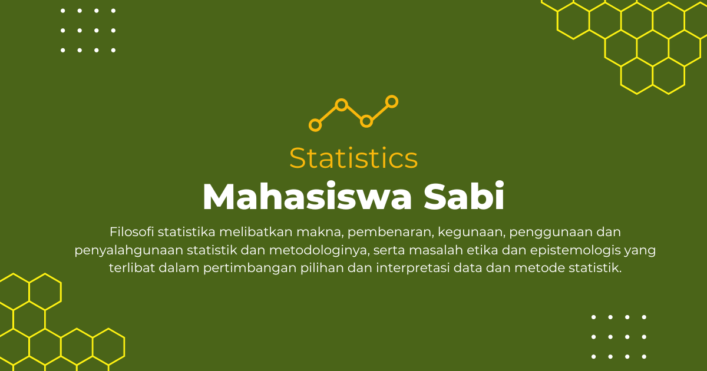

Survival Model
Survival Model: Analisis Waktu Kejadian dalam Ilmu Statistika
Dalam major studi Statistika, mata kuliah Survival Model mempelajari metode statistik untuk menganalisis waktu hingga terjadinya suatu peristiwa tertentu. Peristiwa tersebut dapat berupa kematian pasien, kegagalan mesin, keberhasilan terapi, hingga durasi pelanggan berhenti menggunakan layanan.
Mata kuliah ini menjadi sangat penting karena banyak fenomena nyata melibatkan data berbasis waktu yang tidak dapat dianalisis menggunakan metode statistik biasa.
Apa Itu Survival Model?
Survival Model atau Survival Analysis adalah cabang statistika yang fokus pada analisis data waktu-kejadian (time-to-event data). Tujuan utamanya adalah memperkirakan probabilitas suatu kejadian terjadi dalam rentang waktu tertentu.
Metode ini terkenal dalam bidang kesehatan dan biostatistika, tetapi kini juga banyak digunakan di industri teknologi, ekonomi, teknik, dan ilmu sosial.
Fokus yang Dipelajari dalam Survival Model
Mata kuliah ini membahas berbagai konsep penting dalam analisis survival, antara lain:
- Fungsi survival untuk mengukur peluang bertahan hingga waktu tertentu.
- Hazard function untuk melihat tingkat risiko terjadinya kejadian.
- Kaplan-Meier estimator untuk estimasi kurva survival.
- Cox Proportional Hazard Model untuk menganalisis pengaruh variabel terhadap risiko.
- Censoring dan truncation pada data survival.
- Parametric survival models seperti Weibull dan Exponential model.
Mahasiswa juga mempelajari bagaimana menginterpretasikan data survival menggunakan software statistik seperti R, SPSS, SAS, atau Python.
Peran Survival Model dalam Studi Statistika
Dalam bidang Statistika, Survival Model merupakan kombinasi antara probabilitas, inferensi statistik, dan pemodelan data. Mata kuliah ini membantu mahasiswa memahami bagaimana data berbasis waktu dianalisis secara sistematis.
Keilmuan ini menjadi fondasi penting dalam biostatistika, data science, aktuaria, epidemiologi, serta analisis risiko pada berbagai sektor industri.
Manfaat dalam Masyarakat, Riset, dan Dunia Kerja
Survival Model memiliki penerapan luas dalam berbagai bidang:
- Dalam masyarakat: membantu analisis kesehatan, harapan hidup, dan efektivitas pengobatan.
- Dalam riset: digunakan dalam penelitian medis, epidemiologi, dan studi longitudinal.
- Dalam dunia kerja: dimanfaatkan di bidang asuransi, aktuaria, manufaktur, perbankan, hingga teknologi digital.
Contohnya, perusahaan teknologi menggunakan survival analysis untuk memprediksi kapan pelanggan berhenti menggunakan aplikasi atau layanan tertentu.
Tren Terkini dalam Survival Model
Perkembangan Survival Model semakin pesat seiring kemajuan teknologi data dan komputasi, di antaranya:
- Machine Learning Survival Analysis untuk prediksi berbasis data besar.
- Deep Survival Models menggunakan jaringan saraf tiruan.
- Analisis survival pada data kesehatan digital dan genomik.
- Big data survival analytics dalam industri teknologi dan keuangan.
Selain itu, integrasi dengan kecerdasan buatan memungkinkan prediksi risiko dan waktu kejadian menjadi lebih akurat dan adaptif.
Penutup
Survival Model merupakan mata kuliah penting dalam studi Statistika yang memberikan kemampuan untuk menganalisis data waktu-kejadian secara mendalam. Dengan pendekatan matematis dan aplikatif, bidang ini memiliki peran besar dalam pengambilan keputusan berbasis data.
Di era modern yang dipenuhi data kompleks, Survival Model menjadi salah satu metode statistik yang sangat relevan dalam riset, industri, dan pengembangan teknologi berbasis prediksi.
Mahasiswa Sabi
©Repository Muhammad Surya Putra Fadillah